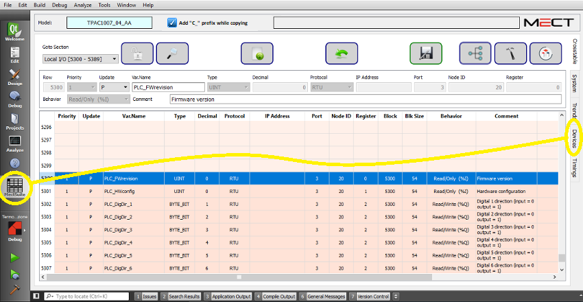

The window provides a topological view of the variables used in the Crosstable.
To start “Devices” see following figure:

Here the interface:
In the window there are 3 columns:
Name: Tree view with the following organization:
Panel → Device (communication interface) → Node → Priority → Block → Variables.
Info: Item information in the tree:
For the Panel, it summarizes the number of variables used in the project, the interfaces used, the Retries and Blacklist parameters (from “System”).
For the Device (interface), it summarizes the number of variables linked to the device, the parameters Max Block Size, Timeout and Silence (from “System”). For the RTU interfaces, the minimum Silence time required by the set Baudrate is calculated (in “System”) and if this time is sufficient (OK or too short).
For the Nodes, the number of variables managed by the node.
For Blocks, the number of variables in the block.
For each Block Variable, the Crosstable Line, the Type and the Behavior (R/O, RW, etc).
Timings: Information of the reading times required for the selected element (only for RTU elements):
For the Device, the total time required to read all the variables grouped also by Priority.
For the Nodes, the time required for reading the node variables also grouped by Priority.
For each Priority level, the time required to read the blocks at that priority level.
For Blocks, the time required to read the Block.